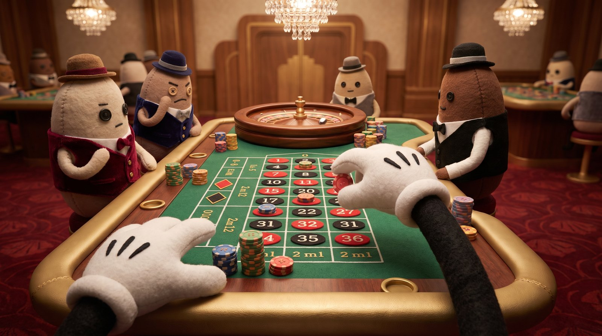
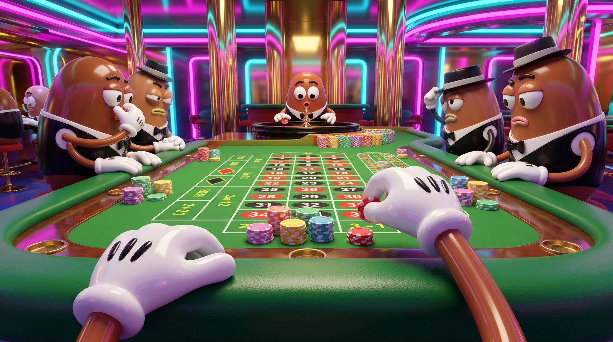
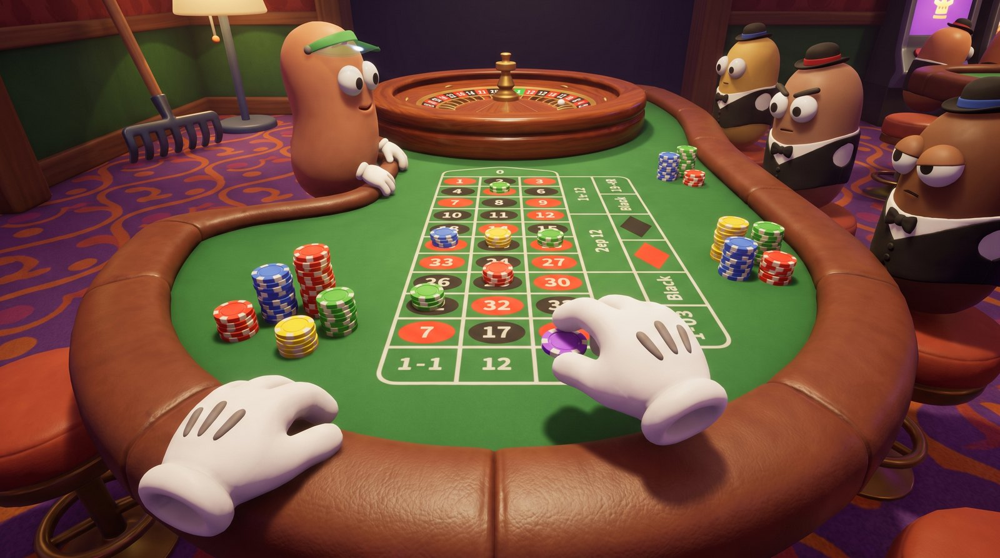
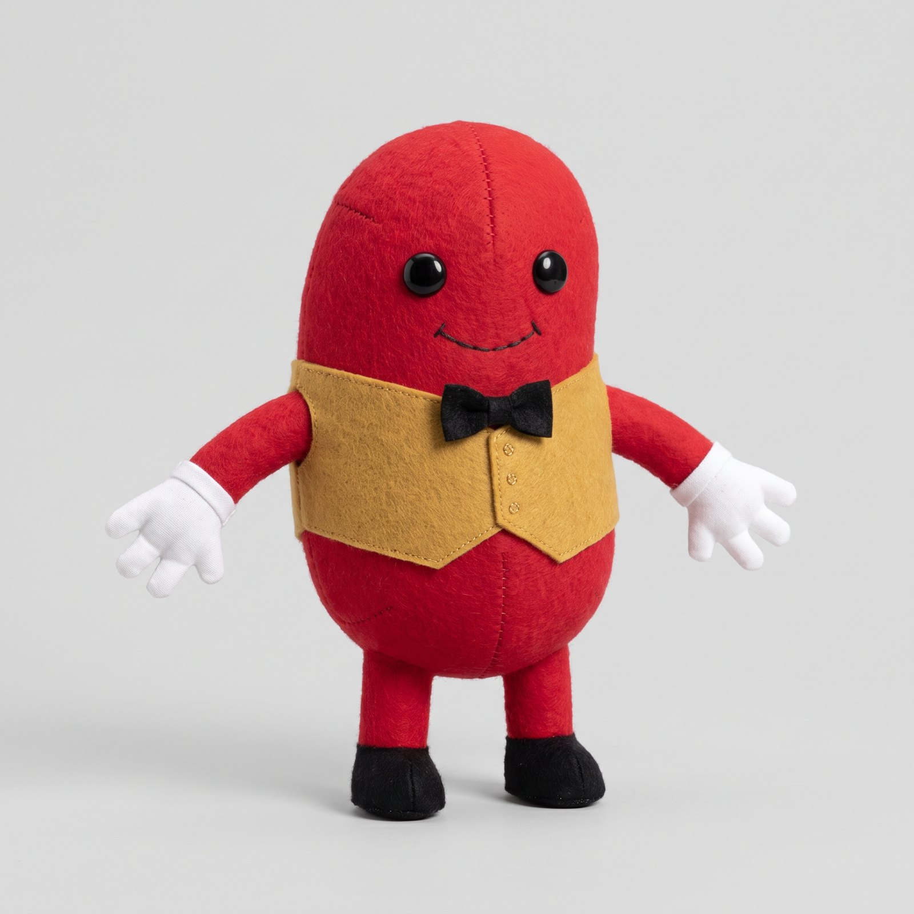
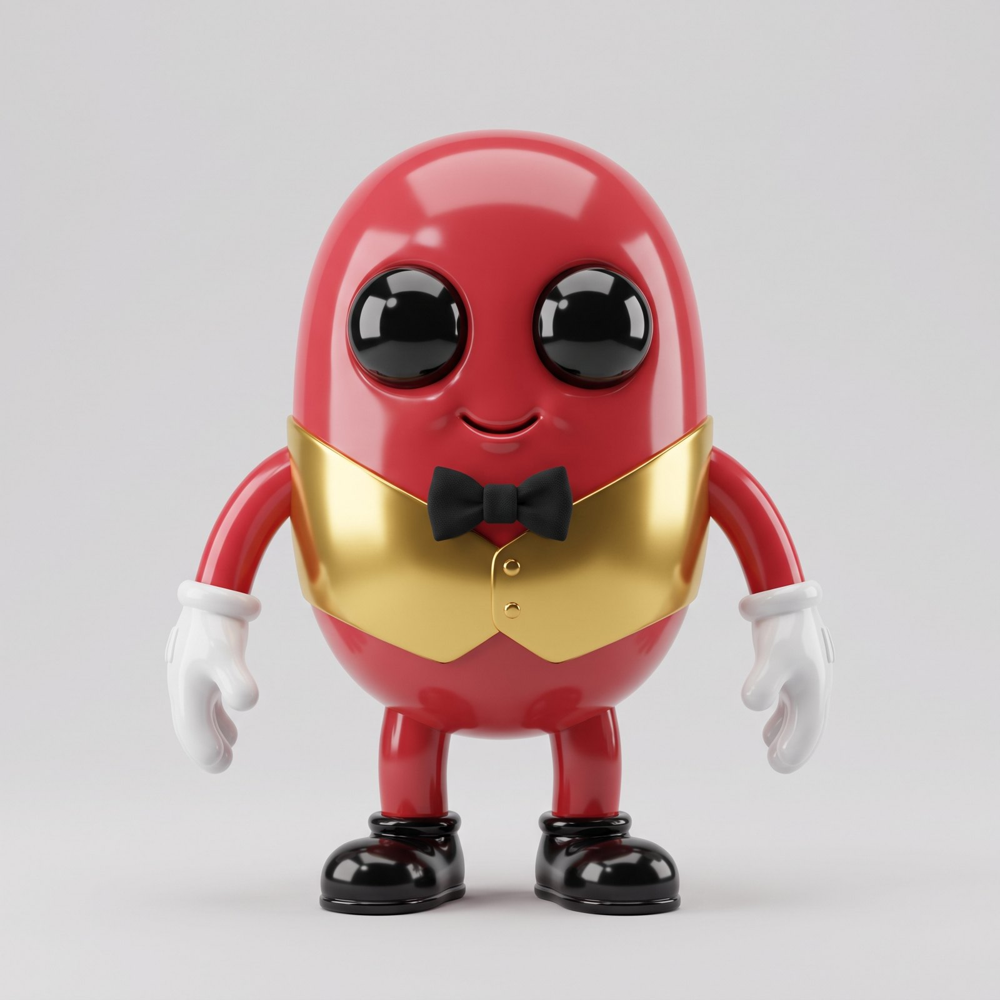
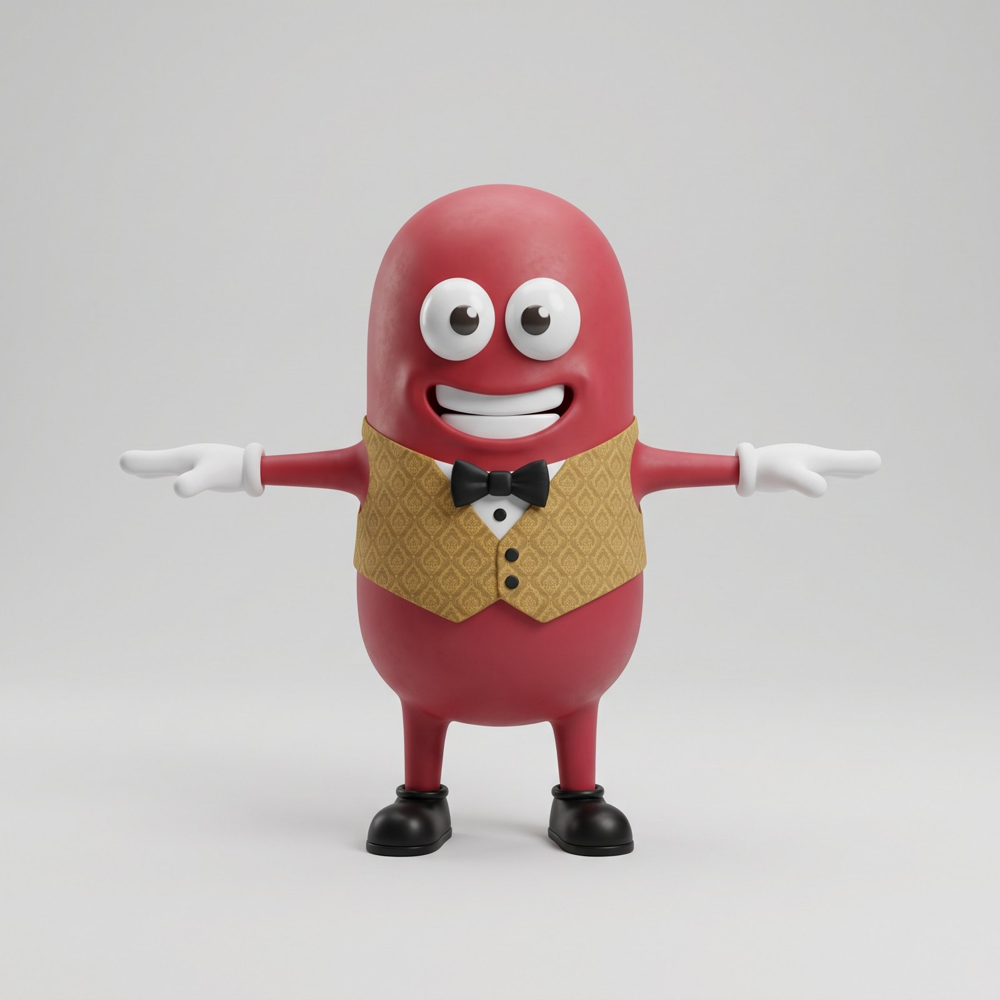
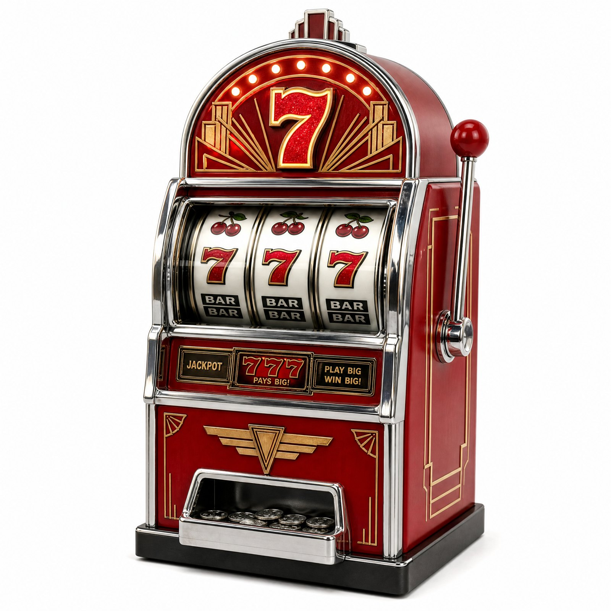
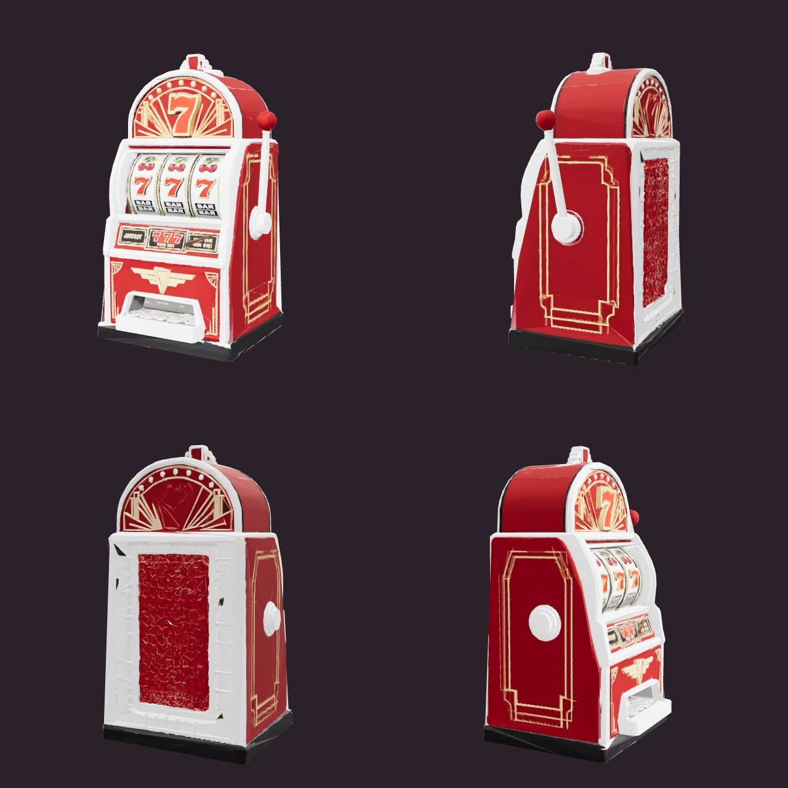

Last Call v4: pick a look
Generated with Sorceress (181 credits so far). Tap one scene and one bean. They can mix: a scene sets the world's look, a bean sets the characters.
1. The casino look

A · Plush dioramaFelt and velvet beans, stitched seams, warm Art Deco, stop-motion film lighting.
B · Glossy neon VegasShiny vinyl toys, magenta and cyan neon, mirrored gold.
C · Chunky cartoonGoogly eyes, oversized props, bright cosy indie-game look.2. The bean (this becomes the rigged 3D character)

A · PlushRed felt, button eyes, stitched smile.
B · Vinyl toyGlossy plastic, big shiny eyes. Would be redrawn in an A-pose before the 3D model.
C · CartoonMatte, googly eyes, big grin.3. The 3D test: a slot machine
The image became the 3D game model next to it (12,000 polygons, rendered from four sides). The chrome came out matte white; a material fix in the game brings the shine back.

Image
3D model